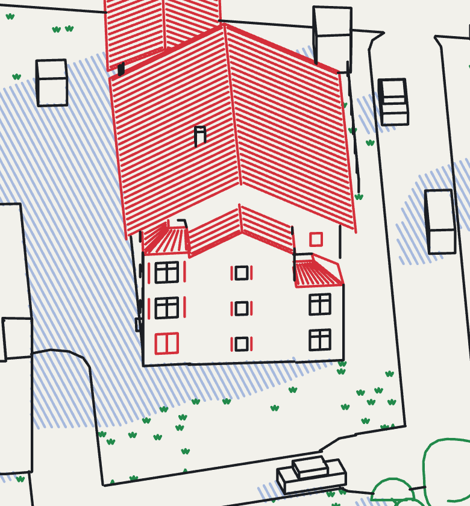
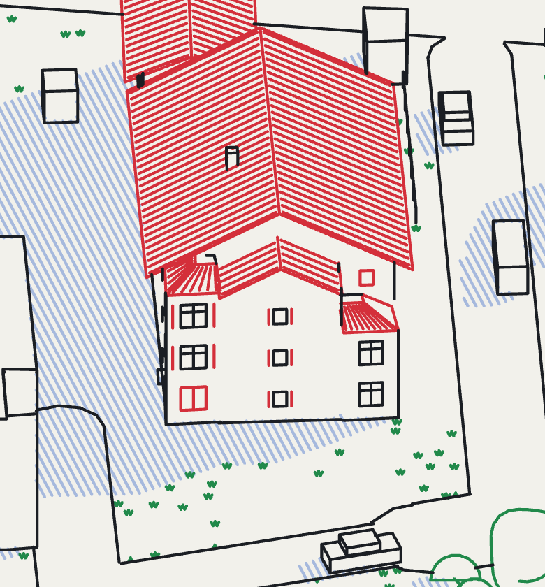
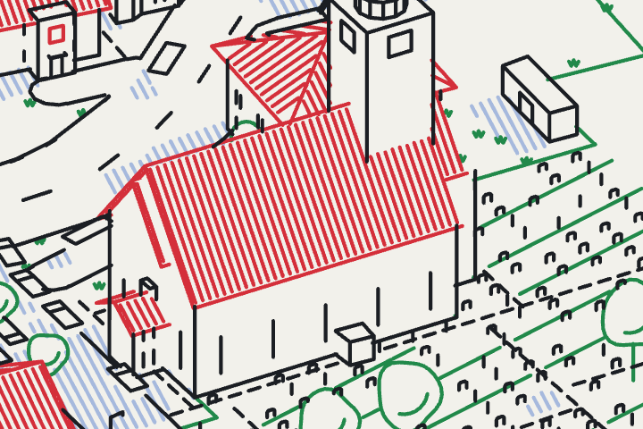
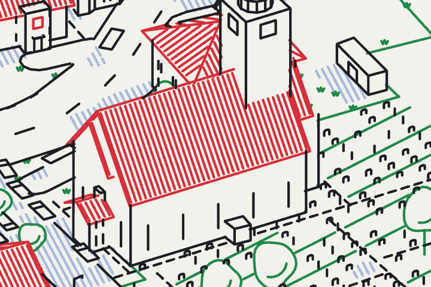

15 November 2026 · Original review
Two different problems contributed to missing roof outlines. The larger gaps came from end edges never being emitted: a party or inner end was assumed to be completely hidden, even when its neighbour was lower or covered only part of the end. A smaller visibility fault occurred when a roof’s own sampled depth hid points lying exactly on its edge.


Party and inner ends now generate outline segments. Before drawing, portions where another pitched roof continues the same plane are removed. That preserves clean joins between equal roofs, while lower neighbours, partial joins and real gaps retain their exposed edges. Ordinary gable outlines remain continuous polylines so their small corners are not lost to the short-stroke filter.


Pitched outlines identify their supporting faces. If the depth buffer rejects a point against one of those same faces, the renderer checks that face’s plane at the exact line position. It does not bypass an unrelated roof, wall or tree, and it does not enlarge the global visibility tolerance.
Tests cover party and inner ends above lower neighbours, hidden edges behind taller neighbours, full and partial coplanar joins, real gaps, rotated roofs and shifted geometry. A small fixture preserves six faces and a nearby tree sprite from the recorded Mollis scene: the original pixel test rejects a point on its own roof, while the exact-plane check keeps it visible. Separate checks ensure unrelated faces and sprites still hide the edge.
An additional diagnostic sampled roof outline segments at roughly 0.5 mm intervals and compared hidden samples with analytic face intersections. It found two false-hidden samples before the rim correction. After correction, none of the 5,203 sampled points rejected against numbered faces were incorrectly hidden by the face geometry. This was a diagnostic of one recorded scene, not a proof for every view or every roof family.
Mollis, Nördlingen and Rye at 1:500 and 1:1000, Detail 1, 0.35 mm pen, optional OSM tags off. The restored contours add ink, and the waste score rises slightly because they lie beside existing hatches. These are deliberate structural strokes. The roof hatch pattern itself is unchanged.
| Sheet | Waste before → after | Estimated plot time change |
|---|---|---|
| Mollis 1:500 | 4.0% → 4.4% | +0.5% |
| Mollis 1:1000 | 5.9% → 6.6% | +0.5% |
| Nördlingen 1:500 | 5.0% → 5.3% | +0.4% |
| Nördlingen 1:1000 | 6.2% → 6.6% | +0.4% |
| Rye 1:500 | 4.4% → 5.1% | +0.8% |
| Rye 1:1000 | 6.1% → 6.5% | +0.6% |
Before LOD report · After LOD report (local generated files).
Reviewed all twelve changed golden sheets, six LOD sheets and their busiest close-ups, and enlarged roof comparisons. Golden differences are limited to roofs, a few dormer detail strokes and plot/SVG summaries. Counts, census, roof hatching, shadows and all other feature totals are unchanged. Build and all 603 tests pass, including determinism, pan and layer-gating checks.
No physical prints, every viewing angle or all 29 presets were inspected. The exact rim correction is attached to pitched-roof outlines; this is not a replacement of the whole scene’s raster visibility system. Complex inferred roof intersections can still produce closely spaced contours and deserve separate artistic review. The rejected contrasting roof tones remain reverted.